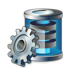
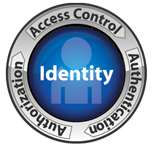
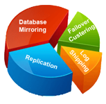
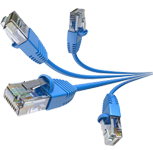

There's a database revolution changing the way you develop, access, manage, and analyze data. But here's the good news: Toad™ has you covered, whether you're working with relational databases or emerging technology. Toad solutions support Oracle, SQL Server, MySQL, IBM DB2, Sybase, PostgreSQL, Teradata, Netezza, Hadoop, SQL Azure, and more. Toad gives you freedom of choice, so you can use the best platforms for your environment and avoid getting locked in by a particular vendor.
Millions of users trust Toad solutions, including our flagship product Toad for Oracle, to provide a simple, consistent way to build, manage, and maintain databases. Whether you're a developer, DBA, or analyst, Toad's unique community-built approach will dramatically increase your productivity.
Toad dramatically simplifies Oracle, SQL Server, and DB2 performance management. It validates code performance and automates SQL optimization. You can quickly identify potential issues and generate semantically equivalent SQL alternatives; immediately implement those alternatives back into your program for an instant performance improvement. With Toad solutions for performance management, you can work smarter, not harder — no matter how much experience you have as a DBA or developer.
Our Toad products dramatically increase productivity by providing deep functional expertise across multiple database platforms. Toad development tools help to guarantee application success through improved code quality, performance, and maintainability. By incorporating expertise from industry-leading evangelists like Steven Feuerstein and recommendations from the Toad user community, we’ve created products that provide automation, increase visibility, and enable team collaboration. Only Toad enables you to develop with record speed and accuracy.
Our Toad products give you deep expertise no matter which database platform you use, and they’re built with your role and productivity in mind. You get dramatically simplified database administration that makes you more proactive by automating maintenance, ensuring optimal performance, and mitigating the risk of change – making your job easier than you ever imagined. And to build your skills and confidence even more, our world-class Toad evangelists are always offering free education to help you discover new Toad functionalities.
We make it simple to connect to nearly all your data sources, provision governed data, and develop or visualize analyses. We also provide a collaborative analysis environment for easy data sharing. With our solutions, you will gain the flexibility to add new data sources, access your corporate data platforms and integrate your data without relying on heavy-handed IT infrastructure tools and support. And best of all, our solutions snap into and complement your existing IT and BI investments.
Quest helps you proactively maintain system and data availability and application performance by detecting issues before they happen. If a problem does occur, Quest helps you quickly troubleshoot and repair performance problems and simplify the data recovery process.
Quest recovery and availability solutions reduce the time to resolution by troubleshooting, resolving, reporting on and measuring problems before they impact end users.
Rely on streamlined workflows to efficiently search for and quickly recover lost data to restore individual objects or perform a full disaster recovery.
Quickly recover files and respond to e-discovery requests and internal investigations with Quest solutions.
Ensure business continuity by protecting and replicating your organization’s most critical data, allowing you to easily restore operations in the event of a disaster. Quest data protection solutions allow you to easily replicate multiple copies of data continuously and immediately, in both physical and virtual environments. Plus, you can recover data from any point in time, in less than one minute, to easily meet service level expectations (SLEs).
Recover any Active Directory item from existing backups quickly and easily. Our solution for Active Directory backup and recovery guides you through the process, whether you simply need a backup of a granular file, or a complete farm restoration. This easy-to-use solution allows you to restore data back to the original or a new Active Directory site, or even to your desktop when Active Directory is not available
Get your servers up and running again after a failed disk drive – even if the environment has no functioning operating system. Our bare metal recovery solution not only allows you to easily meet aggressive recovery time objectives and service level agreements, it also simplifies and expedites the bare metal recovery process by automating most of the manual processes in rebuilding a server.
Optimize online-transaction-processing environments and satisfy users’ information demands — all while maintaining stellar performance. Our low-cost replication solution for Oracle databases allows you to devote resources to your most business-critical projects. And SharePlex employs a streaming process outside of the database instance for minimal impact on database capacity
Simplify data replication with Quest. Our solutions for site to site replication make it easy to replicate multiple copies of virtual or physical data for any purpose, including high availability, migrations and upgrades, operational reporting and disaster recovery. These solutions are not only easy to use, they're also easy to try – simply download a trial and see for yourself.
Quest compliance and IT governance solutions provide assessment, auditing, alerting and remediation to reduce risk and maintain and prove compliance in your Windows infrastructure. With Quest, you can take control of your environment to:
Get the visibility you need to assess the current state of your environment. Then compare changes against a known baseline/expected state for improved governance and compliance.
Detect critical changes in real time and run forensic analysis reports to improve your organization’s security and compliance posture.
Reduce risk by providing preventative controls to prevent changes from taking place and to address issues before they arise – or respond quickly when they do.
Archive messaging data and respond to e-discovery requests and internal investigations with Quest solutions.

Providing employees with the right access to business-critical information should be managed by the business and not IT. Dell One Identity solutions provide a simpler way to identity management and access governance.
Providing employees with the right access to business-critical information should be managed by the business and not by IT. That’s why Dell One Identity empowers the business to govern the access necessary to operate in an agile and effective manner, while reducing the burden on IT.
For access governance Dell One Identity gives you the visibility and control necessary to:
Dell One Identity helps you get a better grasp on the day-to-day management of users and their associated accounts and identities across your most important systems. One Identity’s modular and integrated approach to account management provides rapid time-to-value by offering comprehensive functionality that builds on existing investments.
For identity administration Dell One Identity enables you to securely and efficiently manage the entire identity lifecycle to:
Dell One Identity helps you control and audit administrative access with privileged credentials through granular delegation and command control, keystroke logging and session audit, policy-based control, and secure and automated workflows. This approach enhances security and compliance while improving the efficiency of administering superuser access. Administrators are granted only the rights they need—nothing more, nothing less—and all activity is tracked and audited.
The Quest One Identity Solutions offering minimizes the burden imposed on IT by compliance and audit demands. In addition to providing control of access and administration of identities, Quest One improves the way you “prove” your compliance through automation and reporting consolidation.
For user activity monitoring Quest One gives you the ability to:
In spite of shrinking IT budgets, organizations today require a higher level of efficient administration and automation for tighter security, governance, availability and IT process control.
Quest helps you work smarter and faster by automating the day-to-day management of Microsoft platforms, including: Active Directory, Exchange, OCS/Lync, and SharePoint. Then extend that automation to other platforms and enterprise applications.
Simplify administration of Active Directory with Quest solutions to delegate, secure, configure, audit and back up and restore changes to Microsoft’s LDAP directory service. Our solutions also automate user and group account management with rules, role-based security and easy-to-use interfaces.
Optimize your SharePoint environment with Quest solutions that give you insight into your server and farm configurations and customizations to simplify administration, increase performance, ensure availability and enhance security.
Reduce risk and gain control of SharePoint with tools that provide centralized administration, discovery, site and content browsing, data collection and reporting, global policy and permissions management, and audit data collection and reporting
Increase SharePoint performance, free up space for higher priority data, leverage compression and reduce storage costs while keeping SharePoint scalable to meet business requirements.
Optimize and integrate your unified communications with solutions to maintain messaging performance, defend SLAs, charge back resource usage, simplify migrations, calculate licensing requirements and meet compliance objectives.
Find out what’s in your SharePoint. Quest provides powerful centralized reporting and discovery solutions to help you:
Decrease your administration workload by automating data collection and report generation. You’ll spend less time and money managing your Windows infrastructure and more time making informed tactical and strategic decisions.
Our deep expertise and partnerships with global vendor’s means we can advise you on the best technologies and licensing options for your business. Using our up-to-the-minute knowledge we can analyze your licensing and equipment needs and implement the most affordable, effective and compliant solutions for your current and future needs.
Finding the right hardware and software and deploying it in the most effective ways for your business is a tough ask. Our technical expertise and accredited partnerships make us ideally qualified to provide the balanced insights and holistic perspectives you need to choose the products that will work best for your business.
As partnered with the leading Technology firms like Microsoft, Dell, Kempt, Trend and more. We offer world-leading products and the robust expertise needed to match them to the capabilities you require. We’ll also use our comprehensive knowledge to help you navigate through the complex world of licensing. After running a licensing audit to ascertain where you currently stand, our consultants will then recommend the best route forward. Then, depending on your needs, we’ll set in motion the most beneficial and scalable licensing agreements for you, ensuring your business falls safely within all legal boundaries without being hidebound by unnecessary limitations and complexities.

Your IT systems are critical to your processes, customer relationships and revenue generation. Our High Availability Solutions ensure your key infrastructure is always accessible, helping you to keep working, 24x7. The result is a more robust and productive business buffered from downtime, risk and every eventuality.
Server failure or site disasters such as fire can have severe impacts on any business: expensive downtime, catastrophic data loss and slow-burning reputational damage. Yet many companies fail to appreciate the potentially devastating immediate consequences or fully register the drawn-out recovery timeframes that might be involved until a crisis strikes.
Our High Availability Solutions build vital resilience into your mission-critical systems, helping to keep your business running and earning revenue without interruption, no matter what the world throws at your organization. We deploy the latest VMware and HyperV virtualization technologies, consolidating individual servers and systems onto a secure virtual platform to optimize the flexibility and availability of your services. These innovative virtualization solutions reduce your dependency on hardware, ensuring your core infrastructure is always accessible so you and your people get the certainty of continuous access to key data and applications.
We’ll start by analyzing the weak points in your infrastructure before delivering the best virtualization solution for you at, providing everything from design through to installation and management according to your needs.

Whether you need your existing cabling tidied or improved or you’re looking to deploy a reliable wireless network, we can implement bespoke solutions to streamline your environment and increase performance. Our expert teams will conduct a free site survey to assess your current installations, delivering an impartial assessment of what’s working well and what’s constraining your business.
Ageing cabling and wireless networks can undermine the performance of your IT network, as well as damage its consistency and security. AMAL can help: restructuring or upgrading your installations so they support rather than sap your network and business capabilities, reduce risk and give you the certainty of assured regulatory compliance.
AMAL has partnered with Trend Micro, the world leading Antivirus & Security service provider. As a global leader in cloud security, Trend Micro develops Internet content security and threat management solutions that make the world safe for businesses and consumers to exchange digital information. Trend Micro enables the smart protection of information, with innovative security technology that is simple to deploy and manage, and fits an evolving ecosystem. Trend solutions are powered by the cloud-based global threat intelligence of the Smart Protection Network™ infrastructure, and are supported by over 1,200 threat experts around the globe.